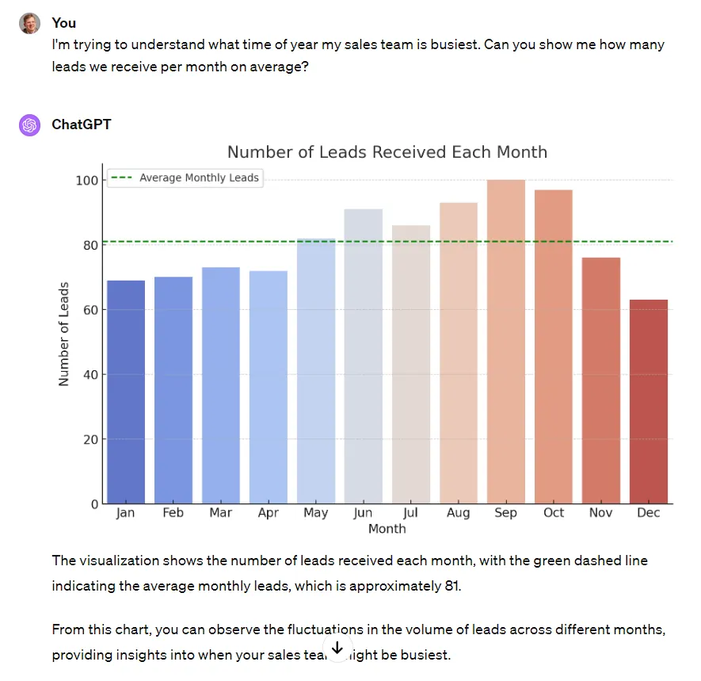
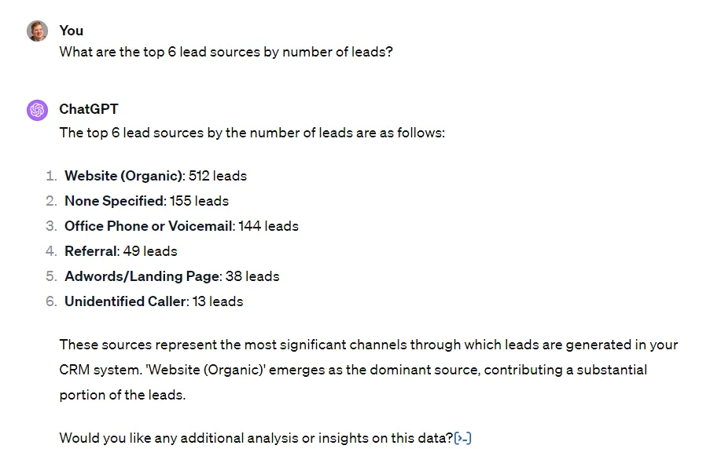
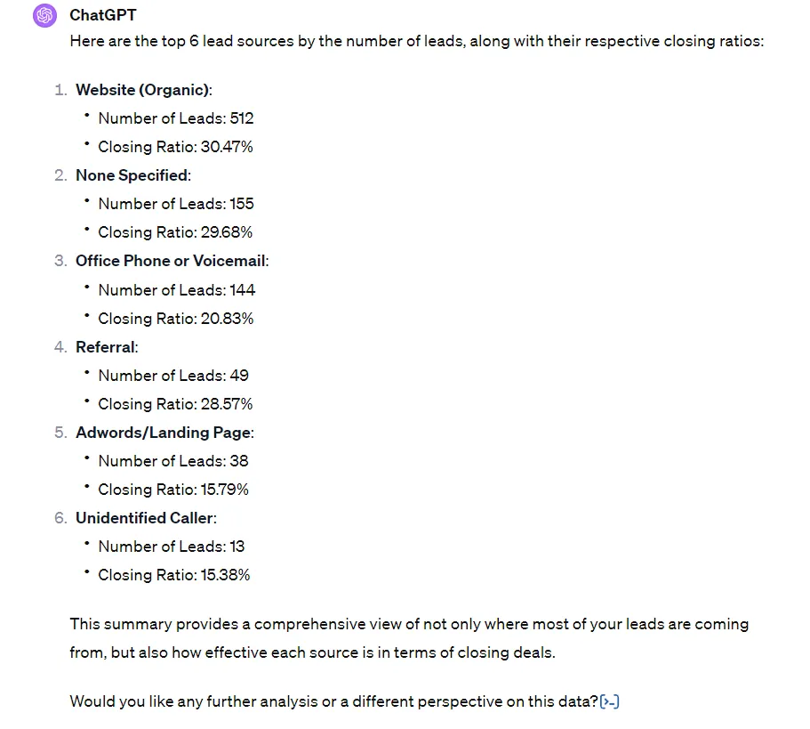
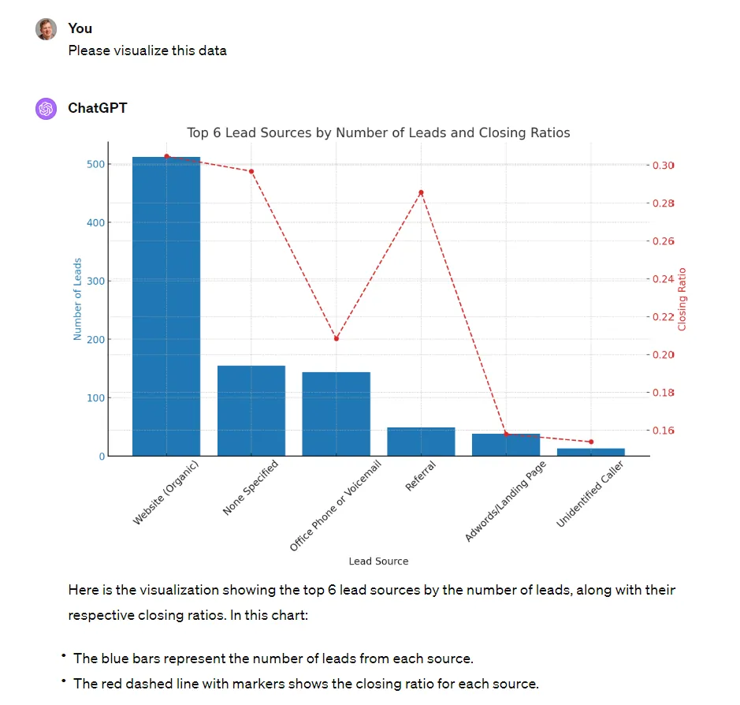
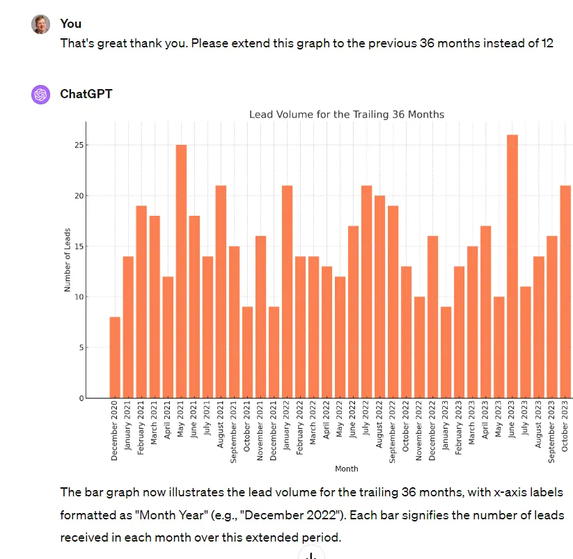
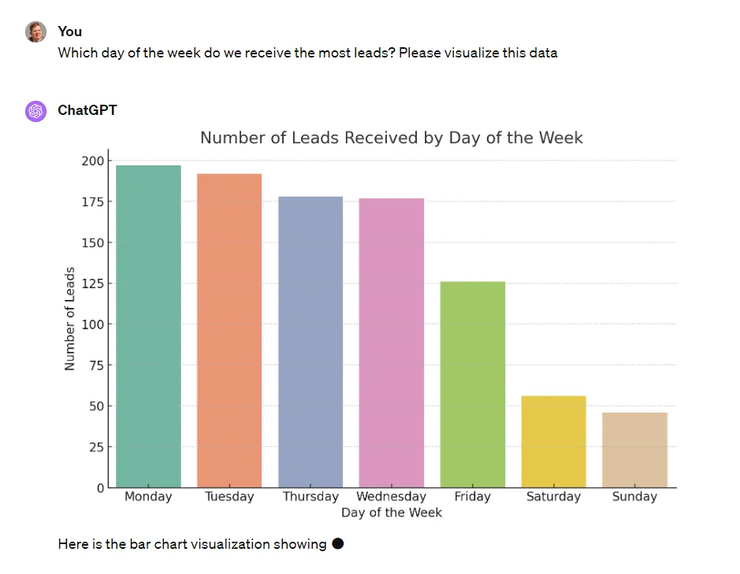
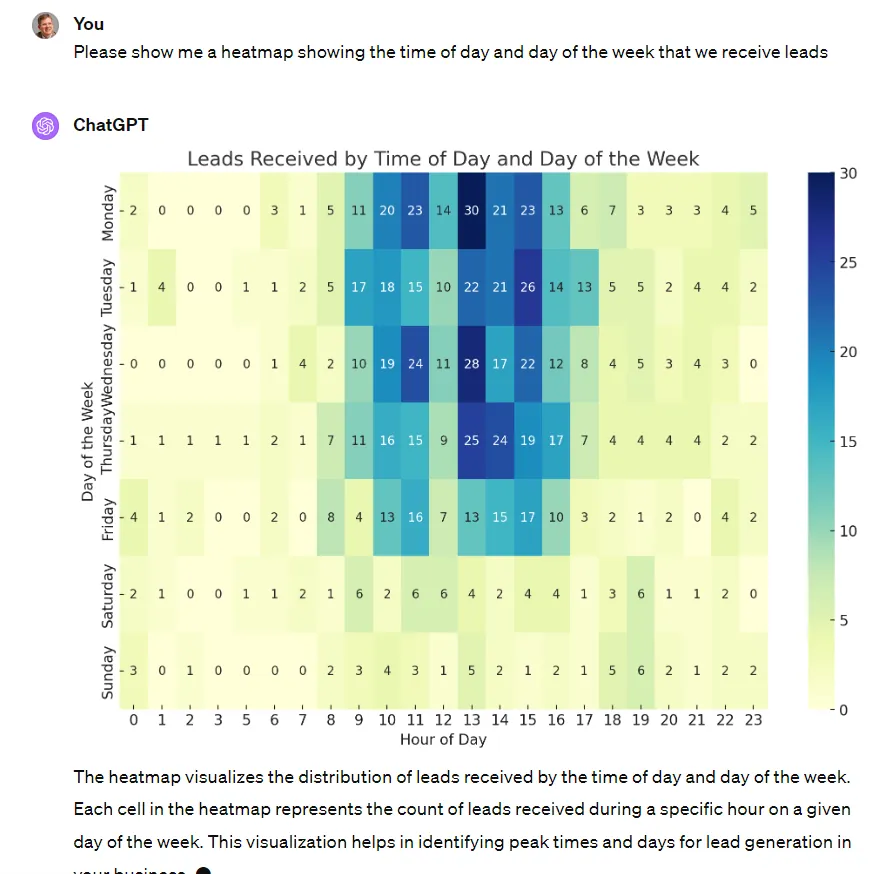
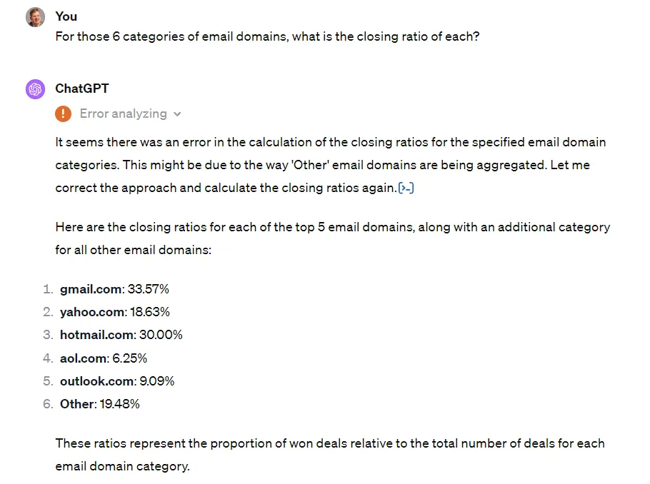

I started playing around with ChatGPT’s new data analysis capabilities last week and was amazed at what is now possible.
Note: This requires ChatGPT 4.0 (paid).
To start, I exported my main LeadSimple pipeline (property management owner leads), dropped the CSV into chatGPT, and started asking questions:

Next, I wanted to find out where our leads were coming from:

From here I wanted to understand how the closing rate varied by lead source:

And then I decided it would be neat to see this on a graph.

Then I became interested in visualizing our lead flow volume over the last 3 years so I could understand any trends:

Then I got curious out if lead flow varied by day of the week. It does, quite a bit:

Next I wanted to see any patterns in lead flow by time of day & day of the week:

Finally, just for fun, I looked into closing rate by the email domain of leads:

So you can see there is a LOT of power here. All of this took me just a few minutes of playing around asking questions.